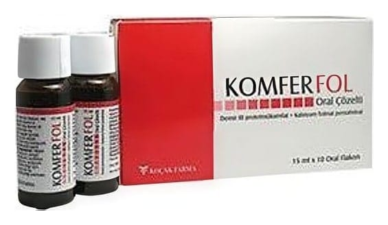

Komfer Fol 40 mg/185 mcg Oral Çözelti, 20 Flk.

Ne için kullanılır
KT · Bölüm 1KOMFER FOL, kutuda l0 ve 20 adet 15 mL'lik flakon olarak sunulan bir solüsyondur.
KOMFER FOL, etkin madde olarak üç değerlikli demir'e eşdeğer demir proteinsüksinilat ve rezervuarlı kapak içerisinde bastırmakla çözelti içerisine giren kalsiyum folinat pentahidrat içerir. • Demir proteinsüksinilat bir demir formudur. İnsanlarda demir kırmızı kan hücrelerinde bulunan hemoglobin adlı proteinin üretimi ve görevi için çok önemlidir. • Folinik asit yeni hücrelerin üretilmesi ve korunması için gerekli bir vitamindir. Bu durum özellikle hücre bölünmesinin hızlı olduğu gebelik ve anne karnındaki bebek için önemlidir.
KOMFER FOL folik asit ihtiyacının arttığı gebelik ve laktasyon (emzirme) gibi durumlarda gelişen anemili (kansızlık) veya anemisiz demir eksikliği tedavisinde veya önlenmesinde kullanılır. Demir eksikliği tanısının uygun laboratuvar testleri ile doğrulanması gereklidir.